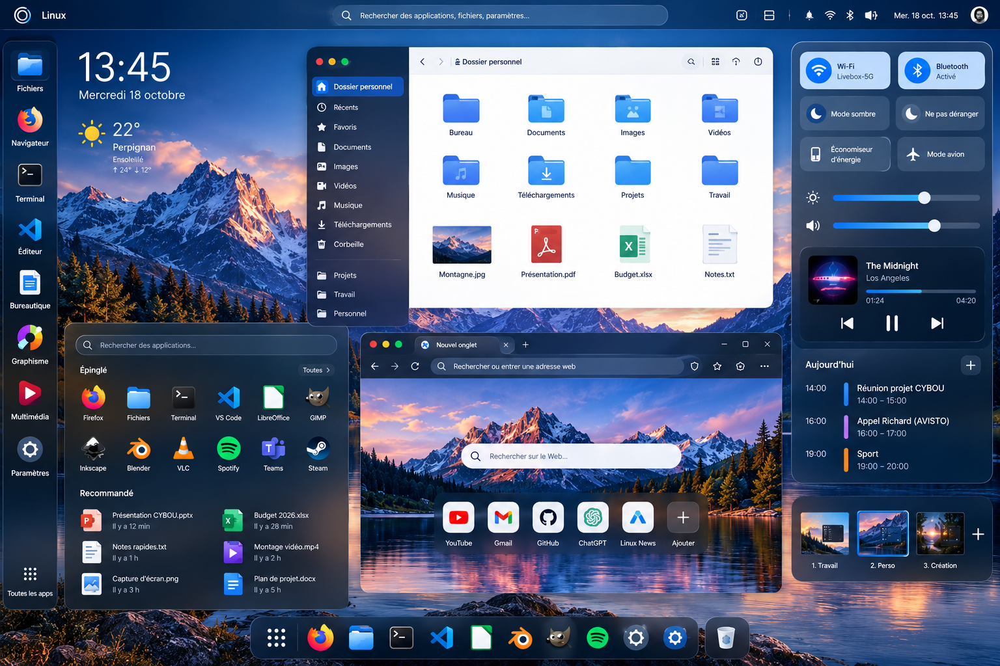

Une véritable expérience de bureau sur votre appareil, tandis que fichiers, outils et données restent sur votre serveur Debian ou Ubuntu. Une seule application native Qt pour Windows et Android.
Développement en cours · Pas de téléchargement public
Bureau Qt / QML localLinux distant via SSHWindows et Android
\n

FORTIQ⌕ Search files, apps, settings...◉ 13:45
▣◈⌘◩⚙
13:45Debian / Ubuntu☀ 22°
‹ › ◧ Dossier personnel ⌕ ▦
📁Documents
📁Projets
📁Téléchargements
📁Media
📄notes.txt
📄report.pdf
📁work
📁archive
● Journaux − ×Événements des services
ssh.service · Session ouverte
nginx.service · Avertissement répété
systemd · Service redémarré
◉ Wi-Fi
ᛒ Bluetooth
☾ Mode
🔊 Audio
▦ ▣ ◉ ◈ ▤ ⚙
Référence graphique approuvée · Image originale exacte, non retouchée. C'est un objectif graphique, pas une capture vérifiée de l'application Qt.
DEUX APPLICATIONS PHARES
Utile au quotidien. Conçu avec précision.
Nous commençons par deux applications réellement utiles, plutôt que douze démonstrations superficielles.
01 / SMART FILES
Vos fichiers distants. À portée de main.
Parcourez vos dossiers Linux, recherchez intelligemment, prévisualisez les documents et gérez les transferts avec une progression et des conflits explicites. Zone de contenu claire, barre latérale sombre et icônes bleues : la grammaire visuelle définie pour FORTIQ.
SFTP distantRecherche et collectionsTransferts sûrs
⌂ Home▰ Documents◈ Projects
‹ › Personal folder ⌕ ▦
📁Projects📁Documents📁Downloads📄Readme
Le prototype possède une navigation SFTP en lecture seule. Les fonctions avancées sont prévues.
02 / LOGS INTELLIGENCE
Comprenez ce qui s'est passé.
Consultez journald et les journaux applicatifs, isolez un service, regroupez les erreurs répétées et obtenez des synthèses liées aux événements sources. Distinction claire entre faits observés et hypothèses ; aucune IA obligatoire.
journalctl et fichiersChronologie en directSynthèse vérifiable
◉ nginx.service ▾ Last 30 min
13:40Session started
13:41Repeated warning ×12
13:43Service restarted
↗ 3 observed patterns · 12 repeated events
L'application Logs est spécifiée, mais pas encore implémentée.
UNE ARCHITECTURE COHÉRENTE
Le bureau ici. Linux là-bas.
FORTIQ affiche l'interface en local. Le serveur conserve les données de travail et les traitements. SSH, SFTP et les outils Linux vérifiés relient les deux. Aucun agent propriétaire, ni bureau GNOME distant, ni streaming d'écran n'est requis.
Aucune connexion directe de secours pour les données. Le navigateur facultatif exige des tests spécifiques du proxy.
Le premier prototype Qt/C++ contient une connexion SSH et la navigation dans les dossiers SFTP. Les exécutables Windows/Android, le bureau fidèle au visuel approuvé, Smart Files avancé et Logs restent à réaliser ou valider.
Sources Qt 6 / C++20Prototype disponible
Fidélité visuelle du bureauNon encore vérifiée
Exécutables Android et WindowsNon encore validés
Smart Files et LogsEn cours de développement
Ensuite : terminal, éditeur, documents et messagerie. Navigateur après validation du routage réseau SSH. IA toujours facultative.